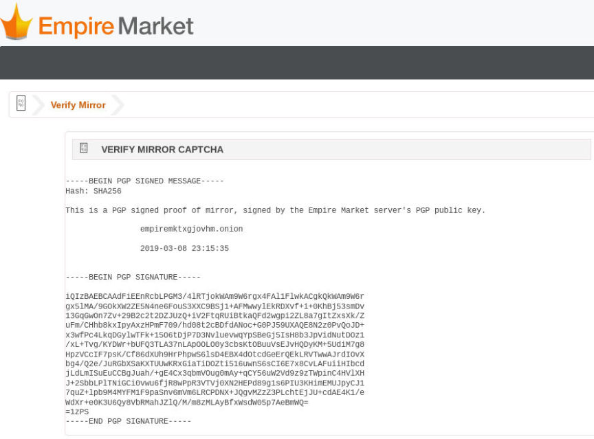

Updated Phishing Warning from Empire Market
~4 min read | Published on 2019-08-16, tagged Darkweb-Market, Phishing using 952 words.
Empire Market staff member Se7en posted an updated warning about phishing links amidst the ongoing battle between the marketplace and scammers stealing thousands of dollars from users by spreading malicious links. The links, as noted in previous warnings, send unsuspecting users to a phishing proxy that looks and acts like the real market.
Se7en’s post from the Empire Market subdread:
The main link empiremktxgjovhm.onion has been online for weeks, and mirrors on dark.fail have high up-time. There is no reason for you to try your luck with random links you come across. There are dozens of active Empire phishers scattered across every corner of the darknet like ants. It only takes common sense to avoid them.
We have so many vendors that each have $500k-1M+ worth of sales that have never had any issues. Meanwhile users using phishing proxies will try to claim their missing $20 was an ‘inside job’.
Steps
For people constantly finding themselves phished, these steps are for you:
Empire Staff will never PM you the ’latest link’, you should never click on any links from any PM/comment/feedback. Never use search engines to try and find links, most of them are phishing links. Use 2FA, included in the encrypted 2FA message is the real link, which you can compare to the link you are using, if they don’t match then you know you’re using a phishing proxy. 2FA will only defend against phishing proxies if you actually compare the links. If in doubt, verify at /safe, and no just checking to make sure there is a signed message at /safe isn’t how you verify a link, you need to actually see if the message has been signed by the market key. This should be common sense. Make sure not to use a fake version of dark.fail or darknetlive.com, there are many of them that have slightly different domains. Checking the link in the captcha isn’t how you should solely be verifying a link, some phishing proxies will overlay a phishing link over the legit link or they will cut out the bottom of the captcha to exclude the link. The two bulletproof ways of ensuring the link is legit are explained in points 3 and 4 above. 
Empire Market 2FA
Empire Market 2FA[/img]
For Vendors
If you are a vendor that has used a phishing proxy, do the following:
Go to a legit link (empiremktxgjovhm.onion or a mirror from dark.fail) Use your mnemonic to change your password and pin at /index/forgot/password and /index/forgot/pin Create a throwaway account on the market and use it to create an account recovery support ticket. PM me on Dread or the market at /u/Se7en and include the support ticket ID so i can escalate it. Trying to tag me in a post isn’t an effective way to contact me, as i have mentioned earlier i have thousands of Dread notifications, so PMing me is better. Most importantly, don’t pay the phisher anything, if they try to extort you ignore them
If your vendor account has been compromised by a phisher you have put it at risk of getting banned. Especially if you don’t even attempt to recover it.
If your account has purchased something that you didn’t purchase:
This means you used a phishing proxy long enough for you to enter your pin at some point while using a phishing proxy, the phisher has placed a queued order to their throwaway vendor account to steal funds after you deposit. Do the following:
Do the same with going to a legit link then using your mnemonic to change your password and pin PM me on Dread or the market at /u/Se7en and include the throwaway vendor username that your account placed an order to so they can be banned
Related: Reminder to Verify Empire Market .Onion Links
Someone on Dread recently pointed out that the phishing attempts on Dread are getting less sophisticated over time. These messages should no longer convince anyone even if the phishing proxies themselves are difficult to detect. Dread users are warning others about fake Empire staff members instead of simply reporting the phisher.
On 16 August, users received a message from “/u/EmpireModeratora0136c3c1f” on Dread. The username is far from convincing. The message is fairly standard.
Hi,
Due to the recent DDOS attacks, our technical team has been working hard to provide some alternative ways to deal with it. Right now we mainly control it but we want to explore new ways to avoid any downtime in the future; for that we are creating some new onion links with higher uptime rotating our onion links internally in a proper way with a custom onion balancer that will distribute our traffic better between remote servers. We will list those links in dark.fail soon too, also we added a new internal feature in the following domains to fight the increasing number of phishing attacks, if your account get compromised our system will not allow the attacker to steal your funds.
You can use any of the following links to access Empire Market, please bookmark them to avoid any phishing attack:
[redacted onion links]
Empire won’t ask for your pin or mnemonic, bitcoin deposit address
always starts with 3 and please check the login phrase on the homepage to ensure that you are using a legit site
If you have your login phrase option activated please check it when you login; if you recognise the login phrase on the homepage it is safe to deposit or withdraw money
Stay safe,
Empire’s Team
The links directed users to a very legitimate looking “Empire Market.” The captchas matched the address in the address bar. The buttons worked. Visiting /safe provided a signed message that also verified the legitimacy of the address from the message. The signature was invalid though, unlike the signature generated when accessing a legitimate Empire Market links such as empiremktxgjovhm.onion or one of the many links from dark.fail.
Se7en’s post from the Empire Market subdread:
The main link empiremktxgjovhm.onion has been online for weeks, and mirrors on dark.fail have high up-time. There is no reason for you to try your luck with random links you come across. There are dozens of active Empire phishers scattered across every corner of the darknet like ants. It only takes common sense to avoid them.
We have so many vendors that each have $500k-1M+ worth of sales that have never had any issues. Meanwhile users using phishing proxies will try to claim their missing $20 was an ‘inside job’.
Steps
For people constantly finding themselves phished, these steps are for you:
Empire Market 2FA
Empire Market 2FA[/img]
For Vendors
If you are a vendor that has used a phishing proxy, do the following:
If your vendor account has been compromised by a phisher you have put it at risk of getting banned. Especially if you don’t even attempt to recover it.
If your account has purchased something that you didn’t purchase:
This means you used a phishing proxy long enough for you to enter your pin at some point while using a phishing proxy, the phisher has placed a queued order to their throwaway vendor account to steal funds after you deposit. Do the following:
Related: Reminder to Verify Empire Market .Onion Links
Someone on Dread recently pointed out that the phishing attempts on Dread are getting less sophisticated over time. These messages should no longer convince anyone even if the phishing proxies themselves are difficult to detect. Dread users are warning others about fake Empire staff members instead of simply reporting the phisher.
On 16 August, users received a message from “/u/EmpireModeratora0136c3c1f” on Dread. The username is far from convincing. The message is fairly standard.
Hi,
Due to the recent DDOS attacks, our technical team has been working hard to provide some alternative ways to deal with it. Right now we mainly control it but we want to explore new ways to avoid any downtime in the future; for that we are creating some new onion links with higher uptime rotating our onion links internally in a proper way with a custom onion balancer that will distribute our traffic better between remote servers. We will list those links in dark.fail soon too, also we added a new internal feature in the following domains to fight the increasing number of phishing attacks, if your account get compromised our system will not allow the attacker to steal your funds.
You can use any of the following links to access Empire Market, please bookmark them to avoid any phishing attack:
[redacted onion links]
Empire won’t ask for your pin or mnemonic, bitcoin deposit address
always starts with 3 and please check the login phrase on the homepage to ensure that you are using a legit site
If you have your login phrase option activated please check it when you login; if you recognise the login phrase on the homepage it is safe to deposit or withdraw money
Stay safe,
Empire’s Team
The links directed users to a very legitimate looking “Empire Market.” The captchas matched the address in the address bar. The buttons worked. Visiting /safe provided a signed message that also verified the legitimacy of the address from the message. The signature was invalid though, unlike the signature generated when accessing a legitimate Empire Market links such as empiremktxgjovhm.onion or one of the many links from dark.fail.